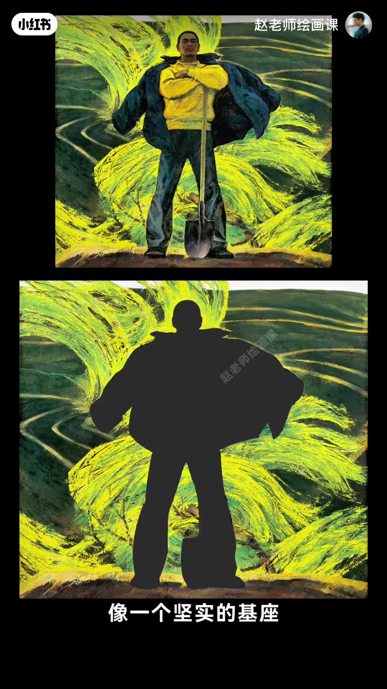
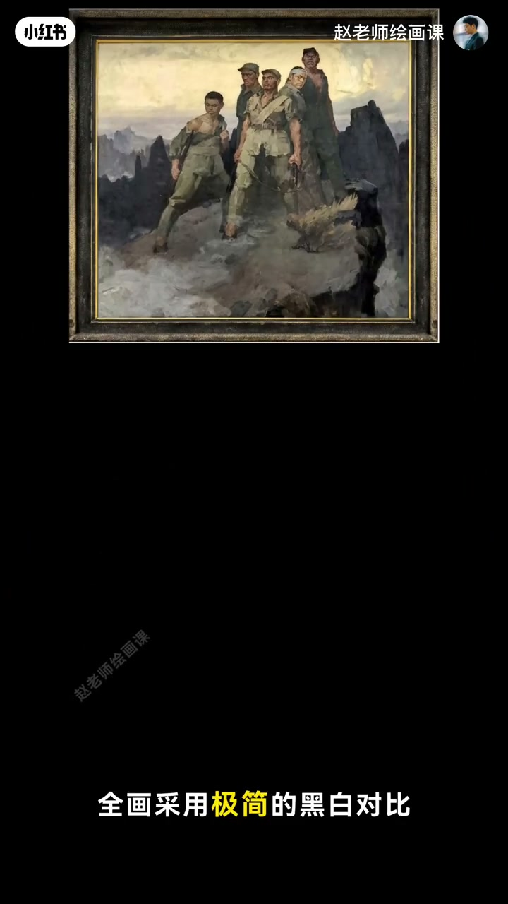
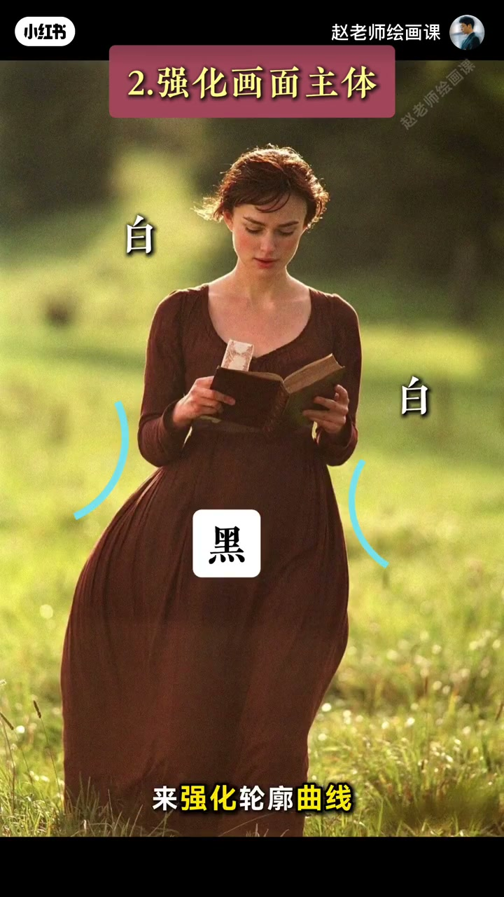
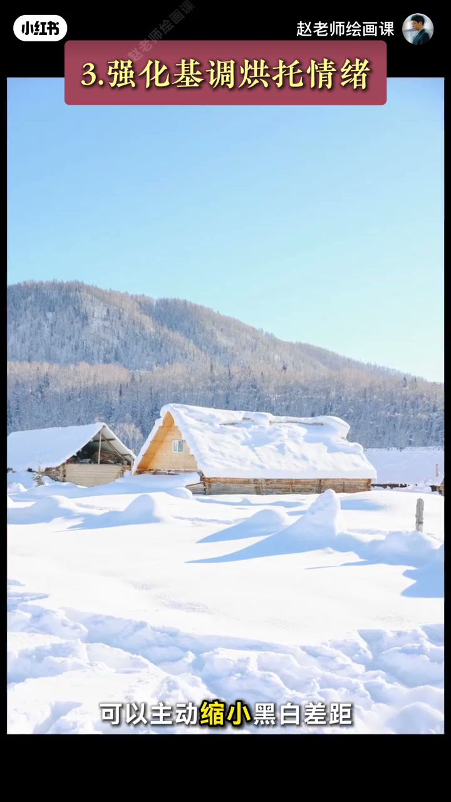

内容要点
色彩褪去还剩什么？詹剑俊《锄》里农民如纪念碑——秘密在黑白关系：浓重黑块如坚实基座定在土地，浅底反衬轮廓，黑中亮块吸视线突出手臂气势。《狼牙山五壮士》以极简黑白对比突出刀刻轮廓。用法三招：拉大固有色明度差距治发灰；黑白强化轮廓与表情；主动经营差距大小烘托情绪基调。结尾彩蛋：为何表情藏在阴影里？
知识结构
《锄》黑基座＋浅底反衬；五壮士极简黑白出坚毅轮廓。
拉大明度建秩序；对比强化曲线与五官。
缩小差距柔和静谧；深色主导沉浸；彩蛋留评论。
黑白不是去色，而是主动经营的明度秩序：先定基座与反衬，再决定对比强弱以服务主体与情绪。
00:00-01:11《锄》与五壮士：黑白出纪念碑感
开场：色彩褪去还剩什么？四十年前詹剑俊用一幅《锄》作答——农民如纪念碑屹立，秘密藏在黑白关系。浓重黑色块表现披大衣农民，剪影般黑色形体像坚实基座牢牢定在土地，象征蓬勃力量；身后柳树与衣物被提亮，浅色背景反衬轮廓更清晰有力。
黑色形体中的亮块像在发光，吸引视线，让手臂姿态与自信豪迈气质凸显。《狼牙山五壮士》全画极简黑白对比，最大限度突出如山峰刀刻的轮廓，赋予英雄坚毅。00:25／01:00 是两幅举证。


01:11-01:43两招用法：治灰与强化主体
第一，黑白关系能解决画面发软发灰：主动拉大固有色明度差距，建立清晰黑白秩序。第二，强化主体——表现女性形体美可用对比强化轮廓曲线；突出表情可用头发与脸部黑白反差，让视线精准落到五官。
01:35 顶栏「强化画面主体」＋黑白标注，把抽象道理钉在轮廓上。

01:43-02:25经营基调：差距大小＝情绪
主动经营黑白关系能更好烘托基调与情绪：冬日暖阳静谧可缩小黑白差距营造柔和；德加交际场景神秘感可让深色主导、以暗基调增强沉浸。结尾彩蛋：为何画家把人物表情隐藏在阴影中？评论区见。
本集收在「通过黑白对比构建画面」的原理，能力训练指向构成系统课。

完整转录（58段）
以下文本由 Whisper medium 模型自动转录，可能存在少量识别误差，已尽可能修正。
当所有色彩褪去
一幅画还剩下什么
四十年前
詹剑俊用一幅巢给出了回答
画中农民如纪念碑般以力务修
秘密就藏在黑白关系中
首先画家用浓重的黑色块
来表现身披大衣的农民
这个剪影般的黑色形体
像一个坚实的鸡座
牢牢地定在土地上
象征著农民蓬勃向上的力量
同时身后飘动的柳树和牢衣
被强烈地提亮
让人物在浅色背景的反衬下
轮廓更加清晰有力
而黑色的形体中的亮块
就像在发光一样
牢牢地吸引著我们的视线
让手臂的姿态更加突出
人物自信豪迈的气质自然突显了
同样还有另外一幅经典
《狼牙山武壮士》
全画采用几件的黑白对比
最大限度地突出了战士们的轮廓
如山峰般刀克的形状
隐于了英雄的坚毅
这就是黑白关系的作用
那该如何运用呢
第一
黑白关系能解决画面发软发灰的问题
我们可以像画家一样
主动拉大固有色的明度差距
为画面建立一个清晰明确的黑白秩序
第二
它可以强化主体
比如想表现女性形体的美
可以利用黑白对比来强化轮廓曲线
想突出人物表情
可以利用头发与脸部的黑白反差
让实现精准的吸引的五官
最后
主动经营好黑白关系
能更好地轰突画面的基调和情绪
比如想表现冬日暖阳下的静谧
可以主动缩小黑白差距
营造一种柔和感
想表现德嘉这幅画中交易场景的神秘感
可以让深色主导画面
以让暗基调来增强沉浸感
这就是通过黑白对比构建画面的原理
如何才能练就这样的能力呢
我们构成系统课上去
结尾留个小彩刀
这幅画中
为什么画家要把人物的表情
隐藏在阴影中呢
评论区等著看